Introduction
Definition
Logistic regression is a supervised machine learning algorithm that accomplishes binary classification tasks by predicting the probability of an outcome, event, or observation. The model delivers a binary or dichotomous outcome limited to two possible outcomes: yes/no, 0/1, or true/false
Historical Background and Development
Logistic regression originated in the field of statistics and was developed by statistician David Cox in the early 1950s. It has since become a fundamental tool in various fields, including medicine, social sciences, and machine learning, due to its simplicity and effectiveness in handling binary outcomes.
Importance in Data Science and Machine Learning
Logistic regression is widely used in data science and machine learning for tasks such as spam detection, credit scoring, and medical diagnosis. Its importance lies in its ability to provide probabilistic interpretations and its ease of implementation and interpretation.
Basic Concepts
Linear vs. Logistic Regression
Linear Regression:
Predicts a continuous outcome by fitting a linear relationship between the dependent and independent variables.Logistic Regression
Predicts a binary outcome by fitting a logistic curve to the data, using the logistic function to map predicted values to probabilities.In a linear regression, the dependent variable is a metric value e.g.salary or electric consumption. In a logistic regression, the dependent variable is a dichotomous variable e.g. 0 or 1, true or false, positive or negative.
Sigmoid Function and its Role in Logistic Regression
Logistic regression uses a logistic function called a sigmoid function to map predictions and their probabilities. The sigmoid function refers to an S-shaped curve that converts any real value to a range between 0 and 1.
Probability Interpretation and Odds Ratio
Probability Interpretation
The output of logistic regression represents the probability that the given input belongs to a particular class.Odds Ratio
The odds of an event occurring is the ratio of the probability of the event to the probability of it not occurring. Logistic regression coefficients represent the change in the log-odds of the outcome for a one-unit change in the predictor.Model
Regression equation
The logistic regression model predicts the probability 𝑝 that an outcome 𝑦 equals 1 (e.g., success) given a set of predictors 𝑋:
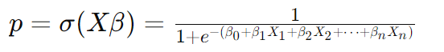
where 𝛽 are the model coefficients.
Logit Function and Logistic Function
Logit Function:
The natural logarithm of the odds of the outcome: 
Logistic Function:
The inverse of the logit function, converting log-odds back to probability.Maximum Likelihood Estimation (MLE)
MLE is used to estimate the model parameters by finding the values that maximize the likelihood of the observed data.
Algorithm Workflow
Step 1 - Data Preprocessing:
Scale features, handle missing values, and encode categorical variables.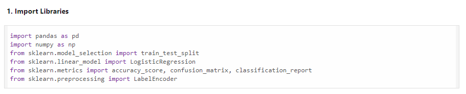
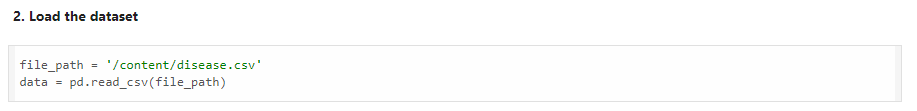
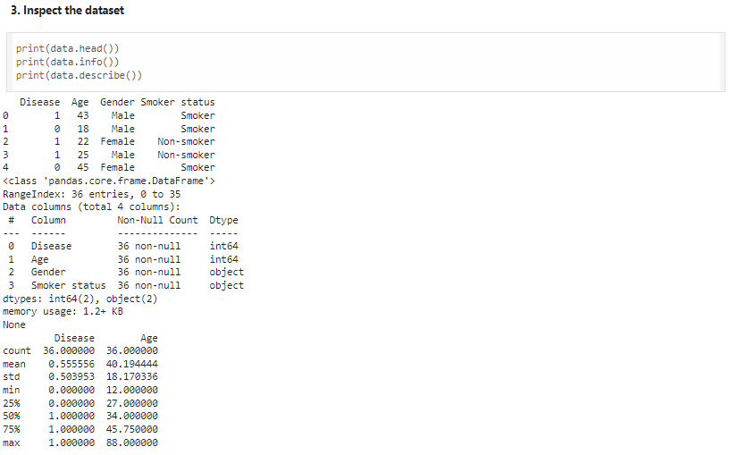
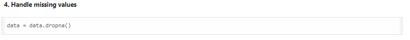
Step 2 - Model Training:
Use optimization methods like gradient descent to find the best parameters.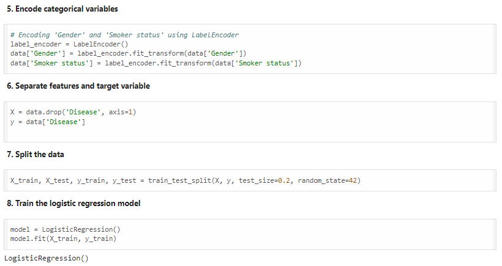
Step 3 - Prediction and Decision Threshold:
Make predictions and determine the decision threshold for classification (e.g., 0.5).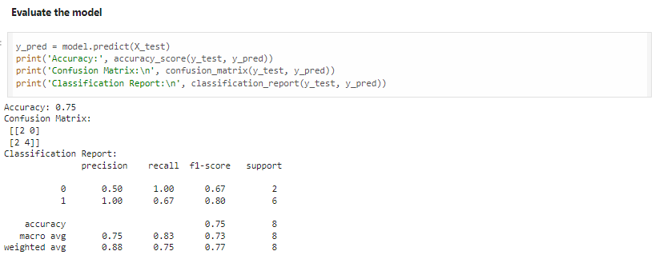
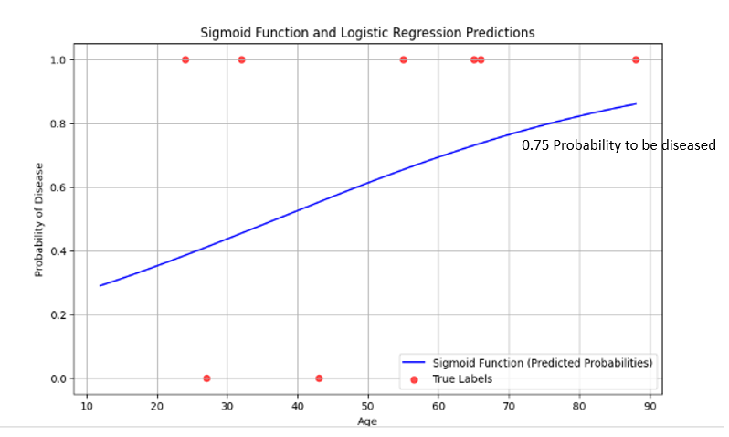
From the given datasets, through logistic regression we can predict the possibility of having a disease of a person given the variables age, gender, smoking status and number of diseased from the whole datasets.
Coefficients
The logistic regression coefficients indicate the impact of each feature on the log-odds of the outcome. The coefficients can be interpreted as follows:
- Positive Coefficient: An increase in the feature value leads to an increase in the log-odds of success (higher probability of success).
- Negative Coefficient: An increase in the feature value leads to a decrease in the log-odds of success (lower probability of success).
Let's assume the coefficients are as follows:
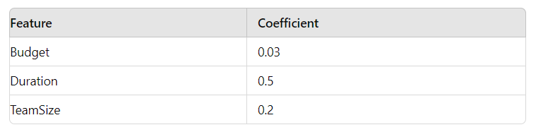
- Budget: For each additional dollar increase in the budget, the log-odds of the project being successful increase by 0.03. This means a higher budget slightly increases the probability of success.
- Duration: For each additional month increase in the project duration, the log-odds of the project being successful increase by 0.5. This means longer projects have a higher probability of success.
- TeamSize: For each additional team member, the log-odds of the project being successful increase by 0.2. This means larger teams slightly increase the probability of success.
Interpretation
From the coefficients, you can see that the duration of the project has the most significant impact on the success of the project, followed by the team size and budget.
By understanding the logistic regression coefficients and model evaluation metrics, you can make informed decisions about the factors that most significantly impact project success. This information can help in planning and allocating resources more effectively to increase the likelihood of project success.
Performance Metrics
Evaluation Metrics
- Accuracy: The proportion of correctly classified instances.
- Precision: The proportion of positive predictions that are actually positive.
- Recall: The proportion of actual positives that are correctly identified.
- F1-Score: The harmonic mean of precision and recall.
ROC Curve and AUC
ROC: Plots the true positive rate against the false positive rate at various threshold settings.
AUC: The area under the ROC curve, representing the model's ability to distinguish between classes.
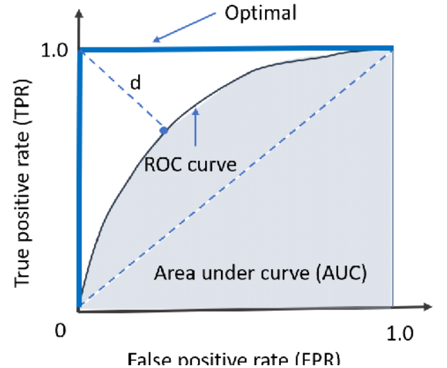Strenght and Weaknesses
- Simple and interpretable.
- Effective for binary classification.
- Probabilistic interpretation.
- Assumes a linear relationship between predictors and the log-odds.
- Can overfit with many features or small sample sizes.
Advantages
Limitations
Types of Logistic Regression
1. Binary Logistic Regression
This is the most common type of logistic regression used when the response variable has two possible outcomes (e.g., success/failure, yes/no).
Example: Predicting whether a project will be successful or not.
2. Multinomial Logistic Regression
Used when the response variable has more than two categories that are not ordered.
Example: Predicting the category of a project (e.g., high priority, medium priority, low priority).
3. Ordinal Logistic Regression:
Used when the response variable has more than two categories with a natural order.
Example: Predicting the severity of an issue (e.g., low, medium, high).
4. Regularized Logistic Regression
Adds a penalty to the logistic regression to prevent overfitting by discouraging complex models.
Example: Predicting customer churn with many features.
5. Penalized Logistic Regression
Similar to regularized logistic regression, it applies a penalty to the coefficients to reduce overfitting.
Example: Disease prediction models where the number of predictors is high.
6. Logistic Regression with Interaction Terms
Includes interaction terms between predictors to capture the combined effect of multiple features.
Example: Predicting sales success considering both marketing spend and the number of sales calls.
7. Hierarchical Logistic Regression
Used when data is nested or grouped, accounting for the hierarchical structure in the data.
Example: Predicting student success where students are nested within schools.
8. Firth Logistic Regression
A method to reduce bias in the maximum likelihood estimates, especially useful for small sample sizes or rare events.
Example: Predicting rare adverse events in clinical trials.
Applications of Logistics Regression
Project Planning and Risk Management
Predict project success or failure to aid in risk assessment.
Quality Assurance
Predict software defects to improve quality control.
Customer Segmentation
Segment customers based on behavior for tailored deliverables.
Performance Analysis
Analyze team performance to identify success factors.
Example:
Determine the probability of heart attacks

Implementation Process
Data Collection
Gathers relevant data for analysis.
Data Preprocessing
Cleans and prepares data for regression.
Applying Linear Regression
Implements using tools like Python or R.
Interpreting Results
Analyzes model output to make data-driven decisions.
Examples and Case Studies
Here is the step-by-step process for implementing logistic regression to predict employee attrition using Python.
We'll use a dataset commonly referred to as the "IBM HR Analytics Employee Attrition & Performance"
Download the datasets here: hrfile.csv
import pandas as pd
import numpy as np
import matplotlib.pyplot as plt
import seaborn as sns
from sklearn.model_selection import train_test_split
from sklearn.linear_model import LogisticRegression
from sklearn.metrics import classification_report, confusion_matrix, accuracy_score
# Load dataset
# Make sure to replace 'path_to_file.csv' with the actual path to your downloaded dataset file
df = pd.read_csv('path_to_file.csv')
# Drop irrelevant columns
df.drop(['EmployeeCount', 'Over18', 'StandardHours', 'EmployeeNumber'], axis=1, inplace=True)
# Encode categorical variables
df = pd.get_dummies(df, drop_first=True)
# Define features and target variable
X = df.drop('Attrition_Yes', axis=1)
y = df['Attrition_Yes']
# Split the data into training and testing sets
X_train, X_test, y_train, y_test = train_test_split(X, y, test_size=0.3, random_state=42)
# Initialize and train the logistic regression model
logreg = LogisticRegression(max_iter=1000)
logreg.fit(X_train, y_train)
# Predict on the test set
y_pred = logreg.predict(X_test)
# Predict probabilities on the test set
y_prob = logreg.predict_proba(X_test)[:, 1] # Probabilities for the positive class (Attrition = Yes)
# Evaluate the model
print("Accuracy:", accuracy_score(y_test, y_pred))
print("\nClassification Report:\n", classification_report(y_test, y_pred))
print("\nConfusion Matrix:\n", confusion_matrix(y_test, y_pred))
# Plot confusion matrix
sns.heatmap(confusion_matrix(y_test, y_pred), annot=True, fmt='d', cmap='Blues')
plt.xlabel('Predicted')
plt.ylabel('Actual')
plt.title('Confusion Matrix')
plt.show()
# Print the coefficients of the features
coefficients = pd.DataFrame(logreg.coef_[0], X.columns, columns=['Coefficient'])
print(coefficients.sort_values(by='Coefficient', ascending=False))
# Plot the S-shaped curve for one feature (e.g., Age)
# Generate a range of values for Age
age_range = np.linspace(X['Age'].min(), X['Age'].max(), 300)
# Create a DataFrame with the mean values for all features except Age
mean_features = X_train.mean().to_frame().T
mean_features = mean_features.loc[np.repeat(mean_features.index.values, len(age_range))]
mean_features['Age'] = age_range
# Predict probabilities for the age range
age_prob = logreg.predict_proba(mean_features)[:, 1]
# Plot the S-shaped curve
plt.figure(figsize=(10, 6))
plt.plot(age_range, age_prob, label='Probability of Attrition')
plt.xlabel('Age')
plt.ylabel('Probability of Attrition')
plt.title('S-shaped Curve for Age and Attrition Probability')
plt.legend()
plt.grid()
plt.show()
Here are the results of the logistic regression model's performance evaluation
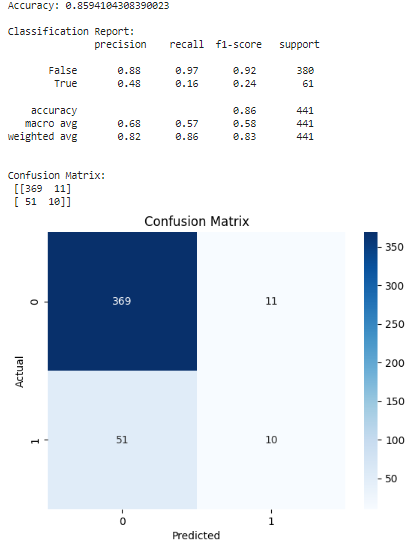
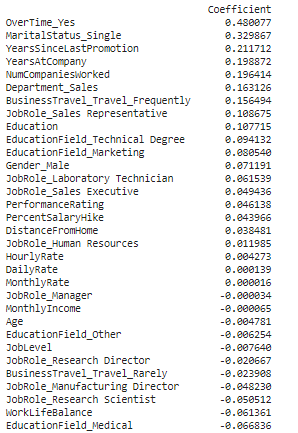
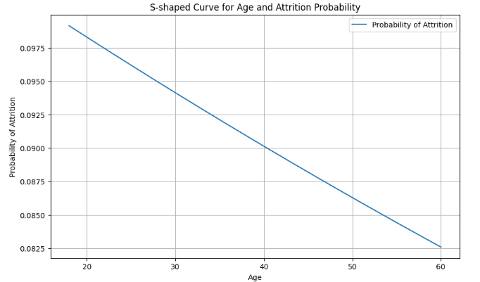
Tools and Technologies
Software Tools
- scikit-learn (Python): A powerful library for machine learning.
- glmnet (R): A package for fitting generalized linear models.
Example Code Snippets and Demonstrations
# Python example using scikit-learn
# Python example using scikit-learn
from sklearn.model_selection import train_test_split
from sklearn.linear_model import LogisticRegression
from sklearn.metrics import accuracy_score
# Load dataset
X_train, X_test, y_train, y_test = train_test_split(X, y, test_size=0.2, random_state=42)
# Initialize and train model
model = LogisticRegression()
model.fit(X_train, y_train)
# Make predictions
y_pred = model.predict(X_test)
# Evaluate model
accuracy = accuracy_score(y_test, y_pred)
print(f'Accuracy: {accuracy}')Comparison with Other Algorithms
SVM
Random Forest
Logistic Regression
Predict project success or failure to aid in risk assessment.
Handles nonlinear relationships well, but can be less interpretable.
Simple and interpretable, but assumes linearity.
Logistics Regression in Google Colab
Step-by-step guide to implementing logistics regression in Google Colab using Python.
Click here to see exampleConclusion
Summary of Key Points
- Logistic regression is a powerful tool for binary classification.
- It provides a probabilistic interpretation of outcomes.
- Important in various fields for making informed decisions.
Importance of Logistic Regression
- Widely used in data science, technology, and project management for its simplicity, interpretability, and effectiveness.
References
- James, G., Witten, D., Hastie, T., & Tibshirani, R. (2013). An Introduction to Statistical Learning with Applications in R. Springer.
- Hastie, T., Tibshirani, R., & Friedman, J. (2009). The Elements of Statistical Learning: Data Mining, Inference, and Prediction. Springer.
- Hosmer, D. W., Lemeshow, S., & Sturdivant, R. X. (2013). Applied Logistic Regression. Wiley.
- Bishop, C. M. (2006). Pattern Recognition and Machine Learning. Springer.
- Pedregosa, F., Varoquaux, G., Gramfort, A., Michel, V., Thirion, B., Grisel, O., ... & Duchesnay, É. (2011). Scikit-learn: Machine Learning in Python. Journal of Machine Learning Research, 12, 2825-2830.
- Friedman, J., Hastie, T., & Tibshirani, R. (2010). Regularization Paths for Generalized Linear Models via Coordinate Descent. Journal of Statistical Software, 33(1), 1-22.
- Cox, D. R. (1958). The Regression Analysis of Binary Sequences. Journal of the Royal Statistical Society: Series B (Methodological), 20(2), 215-242.
- https://www.kaggle.com/datasets/pavansubhasht/ibm-hr-analytics-attrition-dataset
My Activity Outputs
Here's the compilation of my class activity output.
Ex2 - Multiple Linear Regression
Ex3 - Time Series Analysis with ARIMA Model
Activity - Time Series Analysis with ARIMA Model - Renewable Energy Consumption in the US